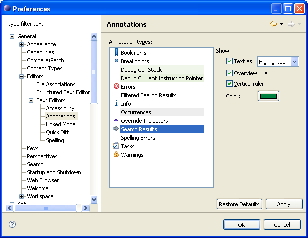

You can configure the way the IDE displays the results of a Search. In order to set the annotation displays, do the following:
Go to the Search Results Annotations preferences dialog General | Editors | Text Editors | Annotations. The Annotations Preferences dialog will open.

Figure 1 - Search Annotation Preferences
Select the annotations for the desired type of search, click Apply and repeat until you have finished setting preferences for all desired search types.
Click OK to exit.
Note: When you perform a search - the results will be displayed in the visual format that you have chosen here.